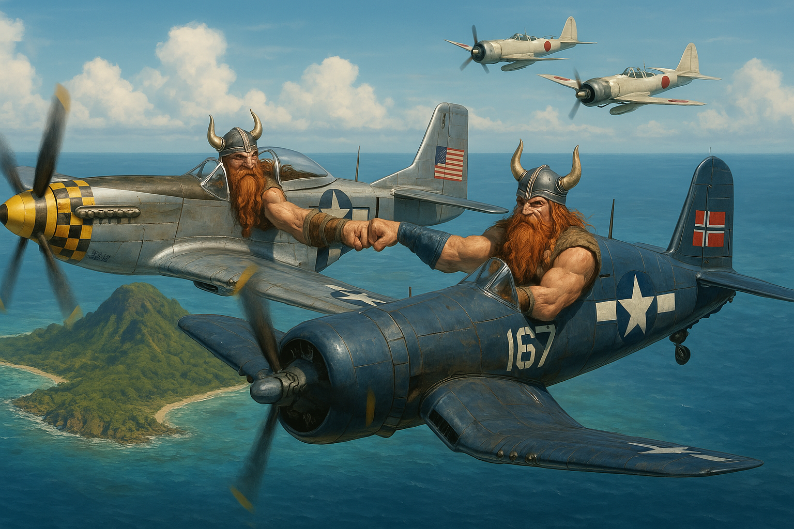

Script Reference Guide — DCS World Mission Editor Setup
In the Mission Editor, add DO Script File triggers at mission start (T = 0). Load them in this order:
Scripts 2–5 can be in any order after MIST. They all self-initialise 2–4 seconds after load.
WWII_Marianas_CAP_CTLD_GCI.lua — The main combined script with six sections (A–F).
What it does: Spawns RED combat air patrols that auto-respawn 300 seconds after death. A maximum of 3 groups per zone are allowed airborne at any time. Several groups have a 5-minute delayed first-spawn. CAP now covers all 5 RED airbases. Each group is zone-locked — after spawn the script overrides ME waypoints with a scripted orbit over the group’s home zone and caps its engagement range to that zone’s radius, preventing flights from chasing threats across the map.
| Base | Groups | Notes |
|---|---|---|
| Rota (existing) | CAPNorth, CAPNorth2, CAPNorth3, CAPSouth, CAPEast, CAPWest | CAPNorth2/3 delayed 5 min |
| Charon Kanoa | CAPCharonKanoa, CAPCharonKanoa2 | 2nd delayed 5 min |
| Ushi | CAPUshi, CAPUshi2 | 2nd delayed 5 min |
| Gurguan Point | CAPGurguan, CAPGurguan2 | 2nd delayed 5 min |
| Pagan | CAPPagan, CAPPagan2 | 2nd delayed 5 min |
| Variable | Default | Purpose |
|---|---|---|
capRespawnDelay | 300 s | Delay before respawning a dead CAP group |
capCheckInterval | 60 s | How often the script checks for dead groups |
capMaxPerZone | 3 | Max CAP groups airborne per zone at any time |
capSpawnTimers | 300 s | Delayed first-spawn for specific groups |
CAP_ORBIT_ALT | 2,500 m | Orbit altitude for all CAP flights |
CAP_ORBIT_SPEED | 120 m/s (~430 km/h) | Orbit speed for all CAP flights |
capPatrolZone | (table) | Maps each CAP group name → its patrol trigger zone. Engagement range = zone radius |
What it does: RED strike aircraft that first appear 15–20 minutes into the mission, then respawn 30 minutes after being killed or landing.
| Base | Group | Initial Spawn Delay |
|---|---|---|
| Rota (existing) | FighterBomber | 15 min |
| Rota (existing) | FighterBomber2 | 20 min |
| Rota (existing) | Bombers | 15 min |
| Rota (existing) | Bombers2 | 20 min |
| Charon Kanoa | FBCharonKanoa | 15 min |
| Ushi | FBUshi | 15 min |
| Gurguan Point | FBGurguan | 20 min |
| Pagan | FBPagan | 20 min |
| Variable | Default | Purpose |
|---|---|---|
bomberRespawnDelay | 1800 s (30 min) | Time before a dead/landed bomber respawns |
bomberCheckInterval | 30 s | Status check frequency |
spawnTime per group | 900–1200 s | Initial delay before first appearance |
What it does: Blue players open F10 → Other → Support and spawn friendly CAP or bomber flights on demand. Only one active group per template at a time. A “Destroy Active Units” sub-menu lets you recall them.
NorthCAP, NorthCAP2, HomeCAP,
Bomb_CoastalGun, Bomb_RadioTower, Bomb_RotaAirfieldWhat it does: Players open F10 → Other → Bomber Missions and choose a bomber type + target island. The script finds all RED ground, naval, and static units inside that island’s BOMB_ZONE_* trigger zone, then dispatches a bomber flight to attack up to 6 randomly chosen targets. After bombing, the flight returns to Agana airfield. Landed or destroyed flights free their slot for re-use.
| Menu Label | Base Template | Altitude | Speed | Defense |
|---|---|---|---|---|
| Light Bombers | LightBombers | 18,000 ft | 300 kts | Fighter (can engage air threats) |
| Medium Bombers | MediumBombers | 20,000 ft | 250 kts | Turret only (bypass & escape) |
| Heavy Bombers | HeavyBombers | 25,000 ft | 230 kts | Turret only (bypass & escape) |
| Zone Name | Menu Label |
|---|---|
BOMB_ZONE_ROTA | Rota |
BOMB_ZONE_SAIPAN | Saipan |
BOMB_ZONE_TINIAN | Tinian |
BOMB_ZONE_PAGAN | Pagan |
BOMB_ZONE_MAUG | Maug |
| Type | Slot Group Names | Max Simultaneous |
|---|---|---|
| Light Bombers | LightBombers, LightBombers_2, LightBombers_3 | Up to 3 |
| Medium Bombers | MediumBombers, MediumBombers_2, MediumBombers_3 | Up to 3 |
| Heavy Bombers | HeavyBombers, HeavyBombers_2, HeavyBombers_3 | Up to 3 |
LightBombers) is required. The _2 and _3 copies are optional — they add extra simultaneous flight capacityBOMB_ZONE_ROTA, BOMB_ZONE_SAIPAN, BOMB_ZONE_TINIAN, BOMB_ZONE_PAGAN, BOMB_ZONE_MAUG covering each island’s target area| Variable | Default | Purpose |
|---|---|---|
BOMBER_CMD.MAX_PER_TYPE | 3 | Max slot groups the script looks for per type (_2 through _N) |
BOMBER_CMD.RTB_AIRBASE | Agana | Airfield used for the RTB landing waypoint |
altFt / speedKts | Per type | Bombing altitude and cruise speed (in template table) |
<template>, <template>_2, <template>_3mist.respawnGroupmist.goRouteWhat it does: Monitors all CAP and bomber groups from Sections A & B. Destroys aircraft that are:
Destroying a group resets its spawn flag, which triggers respawn from Sections A/B.
Nothing extra required — it reuses group names from Sections A & B automatically.
What it does: Gives TF-51D players an F10 menu to load/drop infantry (1–3 soldiers), spawn/pickup/drop cargo crates, and assemble vehicles from multiple crates.
| Vehicle | Crates Required |
|---|---|
| M4 Tractor | 2 |
| M2A1 Halftrack | 2 |
| M4 Sherman | 3 |
BlueCTLD — the logistics loading area. Place it at a friendly airfield/FARP.LogiTF51D (e.g., LogiTF51D, LogiTF51D_2). These are the player TF-51D slots.BlueCTLD zoneWhat it does: When enemy aircraft enter a defended zone, the GCI system scrambles late-activated interceptor flights. They engage, then RTB when:
| Zone Name | Side | Purpose |
|---|---|---|
RED_ZONE_ROTA | RED | Rota defense sector |
RED_ZONE_CHARONKANOA | RED | Charon Kanoa defense sector |
RED_ZONE_USHI | RED | Ushi defense sector |
RED_ZONE_GURGUAN | RED | Gurguan Point defense sector |
RED_ZONE_PAGAN | RED | Pagan defense sector |
BLUE_ZONE_AGANA | BLUE | Agana defense sector |
BLUE_ZONE_NORTH | BLUE | Northern BLUE defense sector |
2 aircraft per group recommended. Route doesn't matter — the script overrides tasking after scramble. Place each group's starting position at/near their assigned airfield.
| Group Prefix | Side | Max Flights | Home Base | Callsign |
|---|---|---|---|---|
RED_AIR_ROTA_01 – _06 | RED | 6 | Rota Intl | SHIDEN |
RED_AIR_CHARONKANOA_01 – _04 | RED | 4 | Charon Kanoa | HAYATE |
RED_AIR_USHI_01 – _04 | RED | 4 | Ushi | RAIDEN |
RED_AIR_GURGUAN_01 – _04 | RED | 4 | Gurguan Point | GEKKO |
RED_AIR_PAGAN_01 – _04 | RED | 4 | Pagan | TENZAN |
BLUE_AIR_AGANA_01 – _06 | BLUE | 6 | Olf Orote | HELLCAT |
BLUE_AIR_NORTH_01 – _04 | BLUE | 4 | Antonio B. Won Pat Intl | CORSAIR |
| Variable | Default | Purpose |
|---|---|---|
UPDATE_INTERVAL | 10 s | Main GCI loop tick rate |
RTB_LOITER_TIME | 45 s | Zone-clear time before RTB order |
SCRAMBLE_THREAT_BUFFER | 30,000 m | Extra radius added to zone for threat detection |
INTERCEPT_LEASH_BUFFER | 60,000 m | Max chase distance beyond zone before RTB |
INTERCEPT_ALTITUDE | 3,000 m | Orbit / intercept altitude |
INTERCEPT_SPEED | 450 km/h | Intercept speed |
GCI_FUEL_RTB_THRESHOLD | 20% | Bingo fuel level triggers RTB |
WWII_Marianas_DGSS.lua — Requires MIST
Fills 18 zones with random Japanese ground groups (infantry, tanks, AA, trucks) selected from 20 templates. Uses a shuffle-bag so you don’t see the same template twice in a row. Marks each group on the F10 map; markers auto-clear when the group is killed. Maintains 1 group per zone (18 total across the map).
SMOKE Each alive group is marked with orange smoke placed 50 m from the lead unit (refreshed every 300 s). A bright white illumination bomb (trigger.action.illuminationBomb) is also fired straight up from the lead unit every 120 seconds, lighting up the area at night. Both markers stop automatically when the group is destroyed.
| Name | Composition | Total |
|---|---|---|
| IJA Patrol | 6× Infantry + 1× Truck | 7 |
| Ke-Ni Scout | 2× Light Tank + 4× Infantry + 1× Truck | 7 |
| I-Go Platoon | 2× Medium Tank + 4× Infantry + 1× Truck | 7 |
| AA Position | 3× 25mm AA + 4× Infantry | 7 |
| Supply Column | 4× Truck + 3× Infantry | 7 |
| IJA Squad | 7× Infantry + 1× AA | 8 |
| Mixed Armour | 2× I-Go + 2× Ke-Ni + 3× Infantry | 7 |
| Beach Defenders | 4× Infantry + 3× AA + 1× Truck | 8 |
| Full Armour Section | 2× I-Go + 2× Ke-Ni + 3× Infantry | 7 |
| … 20 templates total, all 6–8 units | ||
ZONE1, ZONE2, ZONE3, … up to ZONE18| Variable | Default | Purpose |
|---|---|---|
DGSS.ZONES["ZONEn"].minGroups | 1 | Zone never drops below this |
DGSS.ZONES["ZONEn"].maxGroups | 1 | Zone cap |
DGSS.MAX_SPAWNS_PER_CYCLE | 3 | Max groups spawned per 5-min check |
DGSS.CHECK_ZONES_INTERVAL | 300 s | Seconds between spawn sweeps |
DGSS.CLEANUP_INTERVAL | 120 s | Dead group cleanup frequency |
DGSS.SMOKE_INTERVAL | 300 s | Seconds between orange smoke refreshes per group |
DGSS.ILLUM_INTERVAL | 120 s | Seconds between white illumination bomb launches per group |
soldier_mauser98 · Type_89_I_Go · Type_98_Ke_Ni · Type_94_Truck · Type_96_25mm_AA
WWII_Marianas_RedConvoySpawn.lua — Requires MIST
Automatically spawns Japanese supply convoys (trucks, tanks, infantry) that route between random zone pairs. Convoys use Off Road → On Road → Off Road waypoints. Stuck convoys are auto-detected and replaced. Convoys self-destruct upon arrival at their destination zone. Up to 7 active simultaneously.
RED coalition gets an F10 menu item "Convoy Status" showing active count.
ConvoyZone1, ConvoyZone2, … up to ConvoyZone20| # | Composition |
|---|---|
| 1 | 3× Truck |
| 2 | 2× Truck + 2× Infantry |
| 3 | 2× Truck + 1× I-Go Tank + 1× Truck |
| 4 | 2× I-Go Tank + 1× Truck |
| 5 | 2× Ke-Ni Light Tank + 2× Truck |
| … 15 templates total | |
| Variable | Default | Purpose |
|---|---|---|
CONVOY.MAX_CONVOYS | 7 | Max simultaneous convoys |
CONVOY.INITIAL_CONVOYS | 3 | Spawned at mission start (staggered 2 min apart) |
CONVOY.CONVOY_SPEED | 18 m/s | ~65 km/h |
CONVOY.MIN_TRAVEL_DISTANCE | 32,000 m | Minimum route length |
CONVOY.STALL_TIMEOUT | 300 s | Seconds before stuck convoy is destroyed |
CONVOY.SPAWN_LOOP_INTERVAL | 180 s | Seconds between spawn attempts |
WWII_Marianas_AirbaseCapture.lua — Standalone (no MIST required)
Zone-based capture system with a state machine:
RED ↔ NEUTRAL ↔ BLUE
Ground units inside a capture zone shift ownership over consecutive scan ticks (3 scans × 180 s = 9 minutes to capture). Airbases swap coalition when captured. Coloured circle + text markers appear on the F10 map.
FLARE Every RED-owned capture zone and every active (not yet destroyed) destroy zone fires a red signal flare every 30 seconds. Flares stop automatically when the zone is captured/neutralised or destroyed.
CAPTURE_ZONE_RotaAirfieldCAPTURE_ZONE_AganaAirfieldCAPTURE_ZONE_CharonKanoaCAPTURE_ZONE_UshiCAPTURE_ZONE_GurguanPointCAPTURE_ZONE_PaganDESTROY_ZONE_RedEWR1, DESTROY_ZONE_RedEWR2, DESTROY_ZONE_RedEWR3, DESTROY_ZONE_RedEWR4DESTROY_ZONE_Factory, DESTROY_ZONE_Factory2, DESTROY_ZONE_Factory3DESTROY_ZONE_RadioTower, DESTROY_ZONE_RadioTower2, DESTROY_ZONE_RadioTower3DESTROY_ZONE_CoastalGunDESTROY_ZONE_Marpi, DESTROY_ZONE_Kagman, DESTROY_ZONE_IsleyDESTROY_ZONE_Japanese_Fleet| Key | Display Name | Type | Starting Owner | DCS Airbase |
|---|---|---|---|---|
RotaAirfield | Rota Airfield | airbase | RED | Rota Intl |
CharonKanoa | Charon Kanoa | airbase | RED | Charon Kanoa |
Ushi | Ushi | airbase | RED | Ushi |
GurguanPoint | Gurguan Point | airbase | RED | Gurguan Point |
Pagan | Pagan | airbase | RED | Pagan |
AganaAirfield | Agana Airfield | airbase | BLUE | Antonio B. Won Pat Intl |
These zones start as RED and permanently turn black (Destroyed) when all RED units inside are killed. They cannot be captured or recaptured by any coalition.
| Key | Display Name | ME Zone Name |
|---|---|---|
RedEWR1 | EWR Site 1 | DESTROY_ZONE_RedEWR1 |
RedEWR2 | EWR Site 2 | DESTROY_ZONE_RedEWR2 |
RedEWR3 | EWR Site 3 | DESTROY_ZONE_RedEWR3 |
RedEWR4 | EWR Site 4 | DESTROY_ZONE_RedEWR4 |
Factory | Factory | DESTROY_ZONE_Factory |
Factory2 | Factory 2 | DESTROY_ZONE_Factory2 |
Factory3 | Factory 3 | DESTROY_ZONE_Factory3 |
RadioTower | Radio Tower | DESTROY_ZONE_RadioTower |
RadioTower2 | Radio Tower 2 | DESTROY_ZONE_RadioTower2 |
RadioTower3 | Radio Tower 3 | DESTROY_ZONE_RadioTower3 |
CoastalGun | Coastal Gun | DESTROY_ZONE_CoastalGun |
Marpi | Marpi | DESTROY_ZONE_Marpi |
Kagman | Kagman | DESTROY_ZONE_Kagman |
Isley | Isley | DESTROY_ZONE_Isley |
Japanese_Fleet | Japanese Fleet | DESTROY_ZONE_Japanese_Fleet |
| Function | Returns / Effect |
|---|---|
ABC.getOwner("RotaAirfield") | "RED" / "BLUE" / "NEUTRAL" |
ABC.forceCoalition("RotaAirfield", "BLUE") | Instant capture (capture zones only) |
ABC.setDestroyed("RotaAirfield") | Force neutralise (capture zones only) |
ABC.redrawAll() | Refresh all capture & destroy zone map markers |
| Variable | Default | Purpose |
|---|---|---|
ABC.CHECK_INTERVAL | 180 s | Seconds between capture scans |
ABC.CAPTURE_TICKS | 3 | Consecutive scans to capture (× 180 s = 9 min) |
ABC.MIN_CAPTURE_UNITS | 1 | Minimum ground units inside zone |
ABC.FLARE_INTERVAL | 30 s | Seconds between red flare launches per zone |
| Zone Name(s) | Used By | Type |
|---|---|---|
BlueCTLD | CAP/CTLD/GCI — logistics load zone | Circle |
RED_ZONE_ROTA, RED_ZONE_CHARONKANOA, RED_ZONE_USHI, RED_ZONE_GURGUAN, RED_ZONE_PAGAN | GCI (RED defense sectors) | Circle |
BLUE_ZONE_AGANA, BLUE_ZONE_NORTH | GCI (BLUE defense sectors) | Circle |
BOMB_ZONE_ROTA, BOMB_ZONE_SAIPAN, BOMB_ZONE_TINIAN, BOMB_ZONE_PAGAN, BOMB_ZONE_MAUG | Dynamic Bombers (Section C2) | Circle |
ZONE1 – ZONE18 | DGSS (ground spawns) | Circle |
ConvoyZone1 – ConvoyZone20 | Red Convoys | Circle |
CAPTURE_ZONE_RotaAirfield | Airbase Capture (capturable) | Circle |
CAPTURE_ZONE_AganaAirfield | Airbase Capture (capturable) | Circle |
CAPTURE_ZONE_CharonKanoa | Airbase Capture (capturable) | Circle |
CAPTURE_ZONE_Ushi | Airbase Capture (capturable) | Circle |
CAPTURE_ZONE_GurguanPoint | Airbase Capture (capturable) | Circle |
CAPTURE_ZONE_Pagan | Airbase Capture (capturable) | Circle |
DESTROY_ZONE_RedEWR1 – RedEWR4 | Airbase Capture (destroy-only) | Circle |
DESTROY_ZONE_Factory, Factory2, Factory3 | Airbase Capture (destroy-only) | Circle |
DESTROY_ZONE_RadioTower, RadioTower2, RadioTower3 | Airbase Capture (destroy-only) | Circle |
DESTROY_ZONE_CoastalGun | Airbase Capture (destroy-only) | Circle |
DESTROY_ZONE_Marpi, Kagman, Isley | Airbase Capture (destroy-only) | Circle |
DESTROY_ZONE_Japanese_Fleet | Airbase Capture (destroy-only) | Circle |
Total trigger zones needed: 1 + 5 + 2 + 5 + 18 + 20 + 6 (capture) + 15 (destroy) = 72 circle zones
| Group Name(s) | Side | Script / Section |
|---|---|---|
CAPNorth, CAPNorth2, CAPNorth3, CAPSouth, CAPEast, CAPWest | RED | CAP — Rota (Section A) |
CAPCharonKanoa, CAPCharonKanoa2 | RED | CAP — Charon Kanoa (Section A) |
CAPUshi, CAPUshi2 | RED | CAP — Ushi (Section A) |
CAPGurguan, CAPGurguan2 | RED | CAP — Gurguan Point (Section A) |
CAPPagan, CAPPagan2 | RED | CAP — Pagan (Section A) |
FighterBomber, FighterBomber2, Bombers, Bombers2 | RED | Bombers — Rota (Section B) |
FBCharonKanoa, FBUshi, FBGurguan, FBPagan | RED | Fighter-Bombers — new bases (Section B) |
NorthCAP, NorthCAP2, HomeCAP, Bomb_CoastalGun, Bomb_RadioTower, Bomb_RotaAirfield | BLUE | Support F10 (Section C) |
LightBombers, LightBombers_2, LightBombers_3 | BLUE | Dynamic Bombers (Section C2) |
MediumBombers, MediumBombers_2, MediumBombers_3 | BLUE | Dynamic Bombers (Section C2) |
HeavyBombers, HeavyBombers_2, HeavyBombers_3 | BLUE | Dynamic Bombers (Section C2) |
RED_AIR_ROTA_01 through _06 | RED | GCI — Rota (Section F) |
RED_AIR_CHARONKANOA_01 through _04 | RED | GCI — Charon Kanoa (Section F) |
RED_AIR_USHI_01 through _04 | RED | GCI — Ushi (Section F) |
RED_AIR_GURGUAN_01 through _04 | RED | GCI — Gurguan Point (Section F) |
RED_AIR_PAGAN_01 through _04 | RED | GCI — Pagan (Section F) |
BLUE_AIR_AGANA_01 through _06 | BLUE | GCI (Section F) |
BLUE_AIR_NORTH_01 through _04 | BLUE | GCI (Section F) |
| Group Name | Side | Script |
|---|---|---|
LogiTF51D (and any LogiTF51D_* variants) | BLUE | CTLD (Section E) — player TF-51D |
| Any other player aircraft | — | Not script-managed |